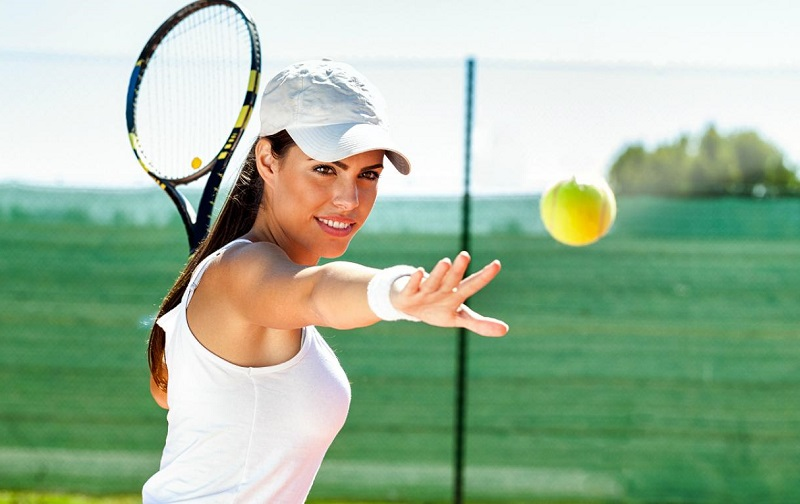
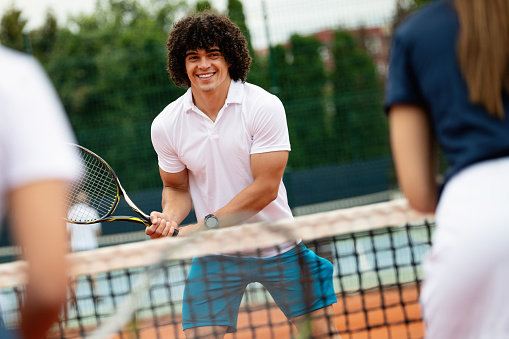
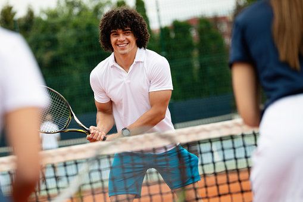
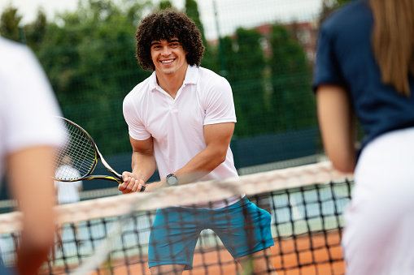

Nuestros profes
Florencia Sar
Andrés López

 


Profesor de Tenis
Nivel inicial
Escuela de verano
Profesor de Tenis
Nivel profesional
Profesor de Tenis
Nivel Amateur
Horarios
| Actividades | Mañana | Tarde |
| Tenis infantil | 9:00hs a 10:30hs | 17:00hs a 18:30hs |
| Tenis amateur | 10:30hs a 13:30hs | 16:00hs a 19:00hs |
| Tenis Profesional | 08:00hs a 12:00hs | 16:00hs a 20:00hs |
| Paddle (recreativo) | 08:00hs a 12:00hs | 16:00hs a 20:00hs |
| Escuela de verano | 09:00hs a 12:00hs | 16:00hs a 19:00hs |